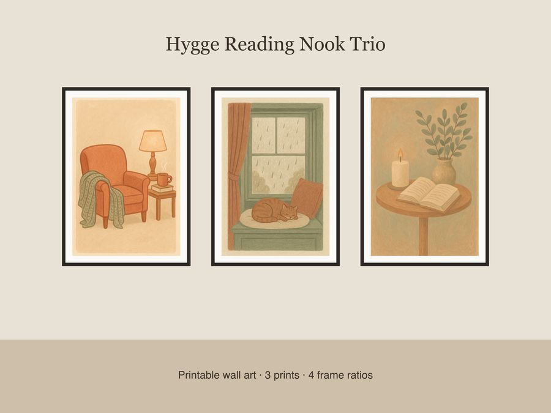

$6.50
View on EtsyTurn any corner into a cozy reading sanctuary with this calming trio of soft gouache illustrations, perfect for slowing down into the winter season. What's included: • 3 unique prints: armchair with knit blanket, mug & stacked books under warm lamp glow / window seat with curled-up cat & rainy frosted glass / side table with candle, open book & eucalyptus in a stoneware vase • Each print in 4 frame-ready ratios (2x3, 3x4, 4x5, 11x14) • 12 total high-resolution JPEG files at 300 dpi for crisp printing • Muted terracotta, sage, and cream palette with gentle linework and visible brush texture How to use: Download your files instantly, then print at home, at a local print shop, or through an online printing service. Choose the ratio that matches your frame and print on matte or fine art paper for the best texture. License: For personal use and small-business commercial use up to 500 units. Please do not resell, redistribute, or share the digital files themselves. A note on how these were made: These illustrations were designed by our shop with the help of AI tools as part of the creative process, then curated and prepared for print. No physical product will be shipped — this is a digital download only.